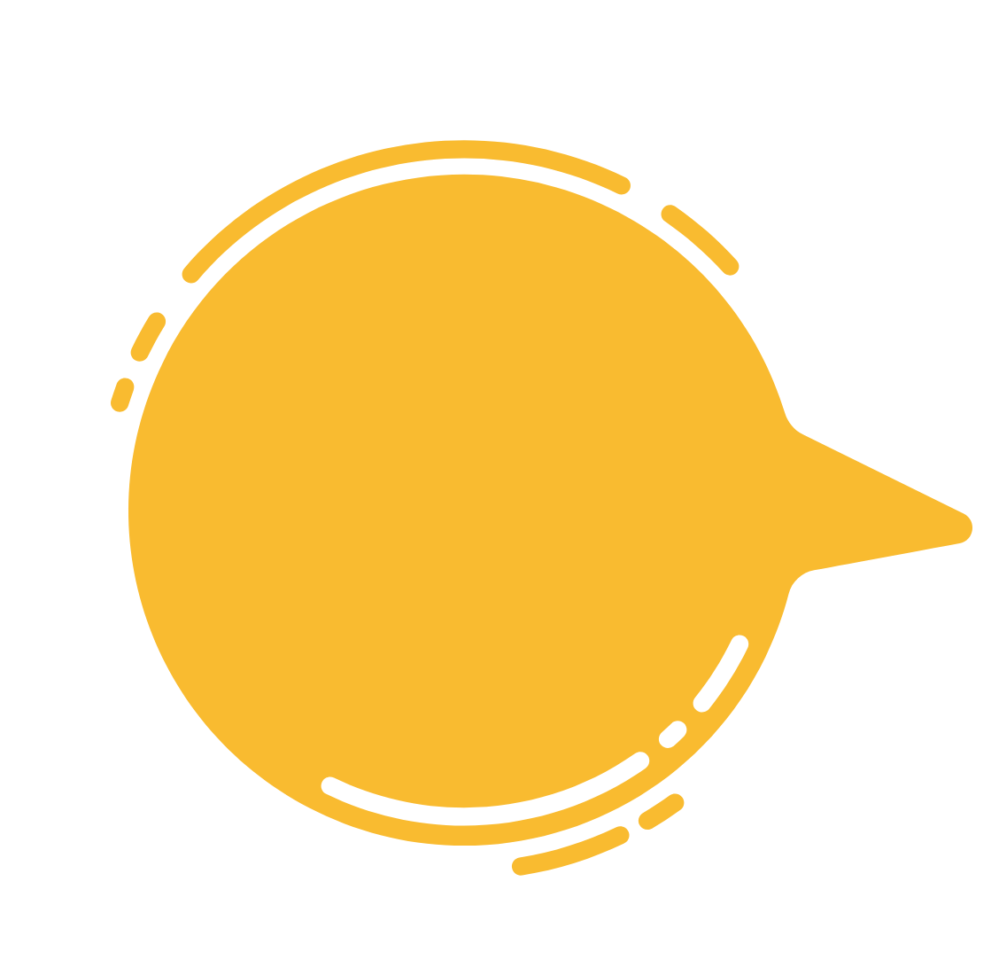

Moonshot Conversations Episode 1: Foundation Session
Some of our ‘whys’ at Moonshot Conversations are:
What is ‘My’ powerful why of attending this Moonshot Conversation ?
List some of the ways you can assist your children towards finding their purpose or finding their ‘why’.
What is something you have been seeing, thinking or doing ‘just because’ as part of a status quo way of seeing, thinking or doing that you can change with a contrarian mindset?
Reflect on some of the things you would like to do differently from now as a result of what you have experienced today.
What is your area of interest and passion that brings scale to your powerful ‘why’?

What is something you have been seeing, thinking or doing ‘just because’ as part of a status quo way of seeing, thinking or doing that you can change with a
contrarian
people who see things differently
mindset?
"I can change with a contrarian mindset"
Click here